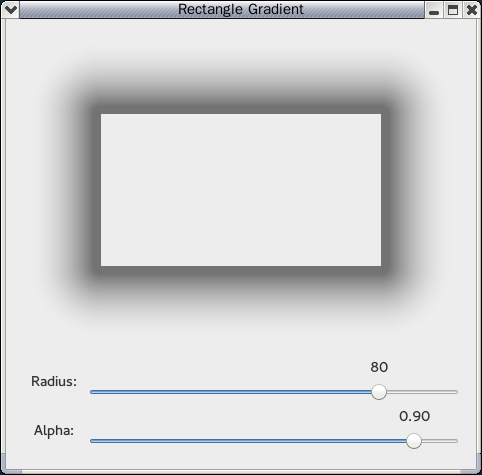
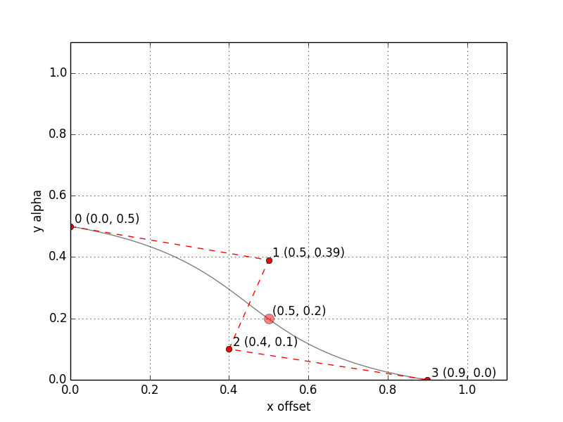
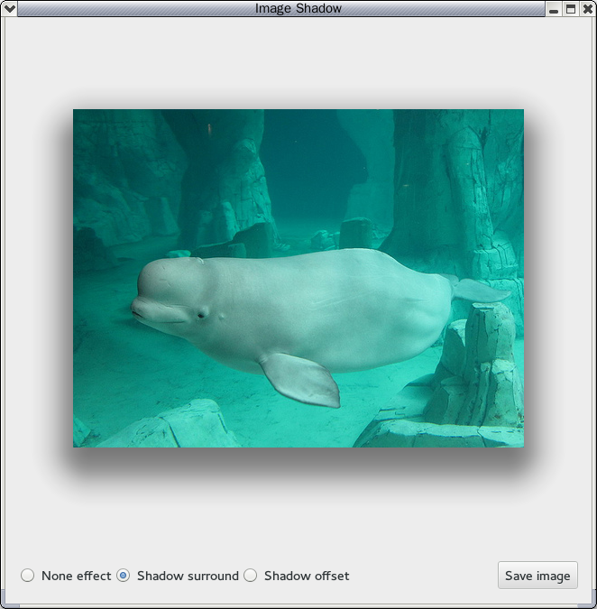

为图片添加阴影特效并不复杂，因为图片多是矩形，我们首先实现一个绘制 rectangle gradient 的函数，其中四个边角利用 radial gradient（径向渐变， 这里 有一个示例）绘制，剩下四条边用 linear gradient（线性渐变）绘制，代码如下:
def do_draw_rectangle_gradient(cr, width, height, radius, color_stops=((0.0, 0.1, 0.1, 0.1, 1.0), (1.0, 0.6, 0.6, 0.6, 1.0))): if width < 2 * radius: width = 2 * radius if height < 2 * radius: height = 2 * radius # radial gradient center points for four corners, top-left, top-right, etc corner_tl = (radius, radius) corner_tr = (width - radius, radius) corner_bl = (radius, height - radius) corner_br = (width - radius, height - radius) corner_points = (corner_tl, corner_tr, corner_br, corner_bl) # linear gradient rectangle info for four sides side_top = (radius, 0, width - 2 * radius, radius) side_bottom = (radius, height - radius, width - 2 * radius, radius) side_left = (0, radius, radius, height - 2 * radius) side_right = (width - radius, radius, radius, height - 2 * radius) # draw four corners through radial gradient i = 0 for point in corner_points: rg = cairo.RadialGradient(point[0], point[1], 0, point[0], point[1], radius) for stop in color_stops: if stop: rg.add_color_stop_rgba(*stop) cr.move_to(point[0], point[1]) angle1 = math.pi + 0.5 * math.pi * i angle2 = angle1 + 0.5 * math.pi cr.arc(point[0], point[1], radius, angle1, angle2) cr.set_source(rg) cr.fill() i = i + 1 # draw four sides through linear gradient # top side lg_top = cairo.LinearGradient(side_top[0], side_top[1] + radius, side_top[0], side_top[1]) for stop in color_stops: if stop: lg_top.add_color_stop_rgba(*stop) cr.rectangle(*side_top) cr.set_source(lg_top) cr.fill() # bottom side lg_bottom = cairo.LinearGradient(side_bottom[0], side_bottom[1], side_bottom[0], side_bottom[1] + radius) for stop in color_stops: if stop: lg_bottom.add_color_stop_rgba(*stop) cr.rectangle(*side_bottom) cr.set_source(lg_bottom) cr.fill() # left side lg_left = cairo.LinearGradient(side_left[0] + radius, side_left[1], side_left[0], side_left[1]) for stop in color_stops: if stop: lg_left.add_color_stop_rgba(*stop) cr.rectangle(*side_left) cr.set_source(lg_left) cr.fill() # right side lg_right = cairo.LinearGradient(side_right[0], side_right[1], side_right[0] + radius, side_right[1]) for stop in color_stops: if stop: lg_right.add_color_stop_rgba(*stop) cr.rectangle(*side_right) cr.set_source(lg_right) cr.fill()
这里 是完整代码, 程序截图如下,

图1 demo pycairo rectangle gradient
但仅仅如此还不行，为了让阴影效果最佳，还要用 bezier curve（贝塞尔曲线）来设置 color stop（颜色渐变规则），这里使用下面的曲线形式，其中X轴为 offset（偏移量，取值范围为 0~1，0 代表阴影绘制起点），Y轴为 alpha（颜色透明度，取值范围为0~1，0 代表完全透明），

这里 是最终代码，程序截图如下，

图2 demo pycairo image shadow